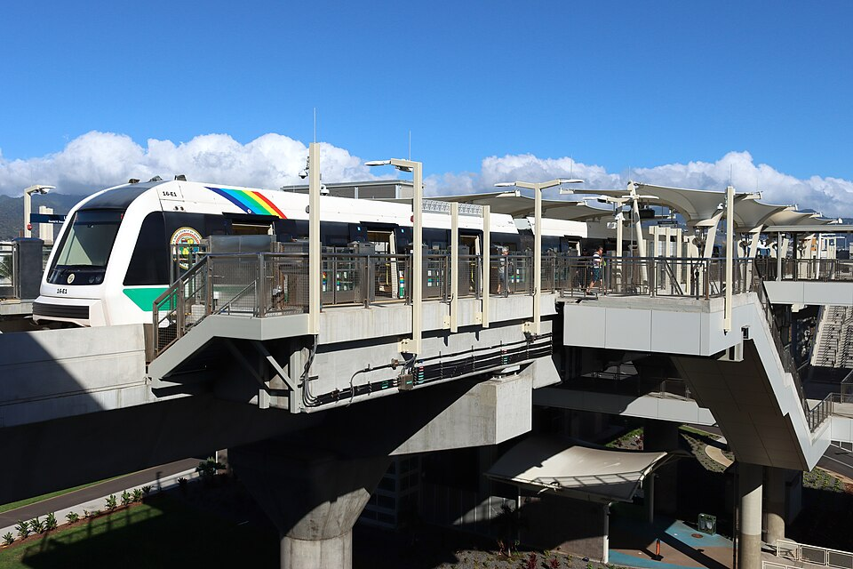

Lelepaua Rail Station
Place: Lelepaua Rail Station, Daniel K. Inouye International Airport, Oʻahu
Type: Skyline rail station / airport station
Namesake: Lelepaua (“the choice mother-of-pearl inside the pāua bivalve”), an ancient fishpond and traditional place name within Moanalua
Story it tells: How a modern rail station at Honolulu's airport preserves the name of a centuries-old Hawaiian fishpond that once supported fishing, aquaculture, and shellfish gathering before being buried beneath the expanding airport.

Lelepaua Rail Station serves Daniel K. Inouye International Airport, standing beside Terminal 2. The elevated Skyline's name is derived from a place that has almost completely disappeared from the landscape. Before runways, parking garages, airplanes, and rail lines occupied this area, Lelepaua was the name of a large Hawaiian fishpond along the coast of Moanalua.
The name Lelepaua is interpreted as “the choice mother-of-pearl inside the pāua bivalve.” Pāua shell produced a smooth, reflective layer of mother-of-pearl that could be tooled into fishing equipment, including the bright shell used in traditional lures. The name preserves a connection to the marine resources that defined this part of Oʻahu's southern shoreline.
The construction of Lelepaua Fishpond occured under the reign and direction of Kaʻihikapu-a-Manuia, an aliʻi who ruled Oʻahu during the late sixteenth century. The pond covered roughly 300 acres and formed part of a much larger coastal system of fishponds, wetlands, reefs, and salt-production around the Moanalua coast. For generations, these waters supported ʻamaʻama, or mullet, awa, shellfish, and other marine resources.
Lelepaua was a carefully managed aquaculture systems designed to take advantage of tides and the movement of juvenile fish between the ocean and protected waters. Stone walls and controlled openings allowed small fish to enter and grow within the productive pond while larger fish could be harvested for surrounding communities. Lelepaua supported Moanalua for approximately three centuries.
During the nineteenth century, the lands and fishponds of Moanalua were inherited by the estate of Samuel Mills Damon. Lelepaua continued operating into the modern era even as Honolulu expanded westward and the surrounding shoreline was increasingly transformed by industry, transportation, and military development. The same shallow coastal environment that had supported Hawaiian aquaculture would eventually attract a dramatically different use: aviation.
In 1927, John Rodgers Airport opened on nearby lands as Honolulu's first major civilian airport. As aviation expanded, the Territorial Government acquired additional property around the airport, gradually pushing transportation infrastructure into the wetlands and fishing grounds surrounding Lelepaua. The transition from wetland to commercial aviation space accelerated enormously after the attack on Pearl Harbor in 1941, when the military assumed control of the airport and expanded it for wartime operations using emergency powers.
During the 1940s, dredging and filling projects dramatically altered the shoreline. Coral and other material dredged from nearby waters were deposited across wetlands and fishpond areas as engineers created the broad, level terrain required for runways, taxiways, and other military facilities. Lelepaua Fishpond disappeared beneath this expanding airport landscape, ending centuries of aquaculture at the site.
The transformation was enormous. A landscape once defined by shallow water, fishpond walls, shellfish, salt production, and fishing became one of Hawaiʻi's busiest transportation centers. John Rodgers Airport evolved into Honolulu International Airport and eventually Daniel K. Inouye International Airport, while almost every visible trace of Lelepaua vanished beneath pavement and airport infrastructure.
More than seventy years after the fishpond disappeared, construction of Honolulu's rail system created an opportunity to return its name to the landscape. The Hawaiian Station Naming Working Group researched traditional place names along the Skyline corridor, seeking names that connected each station with the history and geography of its surrounding area. For the airport station, Lelepaua restored the name of the fishpond that had once occupied this part of Moanalua.
Today, Lelepaua Rail Station places that older landscape directly beside one of the most modern transportation environments in Hawaiʻi. Travelers arriving by airplane can transfer to an automated electric railway at a station carrying the name of a Hawaiian fishpond buried during the airport's own expansion.
Lelepaua preserves the memory of the fishpond, marine resources, and generations of Hawaiian aquaculture that occupied this site.